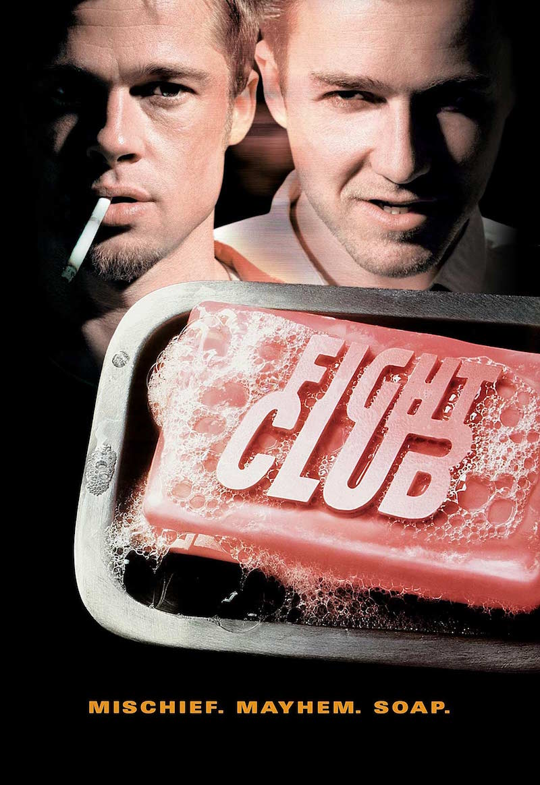
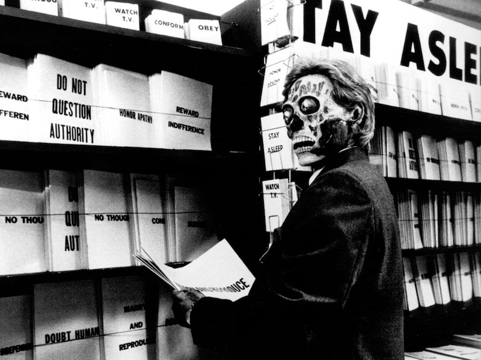

Riot movie
Let's go to town, act violently!
Do not buy the bread!
Did you understand? Do not buy the bread!
Buy the dynamite!
Fight Club


1999 / USA / 139min
Director: David Fincher
Starring: Brad Pitt, Edowato Norton, Helena Bonham Carter
Men who bored consumer society of high capitalism gathered to a charisma, they scheme project "Mayhem". This film is riot movie predicted the Millennium of the beginning "911" by the collapse of the high rise building. From opening title role that arouse adrenaline till end role flowing "Where is My Mind?"(song by the Pixies) are full roar effect.
YAMA - ATTACK TO ATTACK-
1985 / Japan / 110min
Director: Mitsuo Sato Yamaoka Kyoichi
Sanya is a town of laborers, they fight the gangsters. The gangsters identified himself emperor principle right wing, they try to violently dominate and integrate workers. To the axis of the laborers and gangsters fight, this documentary film revealed the discrimination and governance structure that has been created in Japan modernization. Sato Mitsuo(Director) was killed during the shooting of this film, also Yamaoka Kyoichi who succeeded Sato's intention was killed. They were killed by a gangster who opposing the laborers.
This film from it begins that death of Sato and the riots of the counterattack.
CHARISMA
©1999 Nikkatsu King record Tokyo Theatres Company
2000 / Japan / 104min
Director, Screenplay: Kiyoshi Kurosawa
Music: Gary Ashiya
Starring: Koji Yakusho, Hiroyuki Ikeuchi, Osugi Ren
"Charisma" that would kill the trees all around. Two populations compete around "Charisma". One day, a vagabond appeared there. Regulations of society become rigid, finally it cause the conflict of populations. And what happens then? This film like the thought experiment. Attention to the answer to be derived in the last, "cure the law of the world."
They Live

1988 / USA / 93min
Director and Music: John Carpenter
Starring: Roddy Piper, Keith David
The world has been dominated by the guys. They control the society of the central, domesticate the masses and exploit them. A homeless got the sunglasses to reveal the identity of society, he start a revolution. "Kill them all !" What this film describe already has become a reality now.